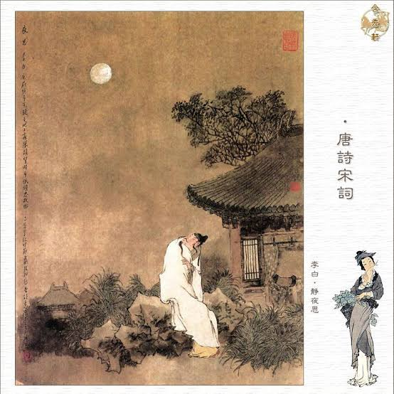

静夜思 (Jìng yè sī) – "คิดคำนึงในคืนอันเงียบสงบ

ผู้แต่ง: หลี่ไป๋ (李白 - Li Bai) | ราชวงศ์: ถัง (Tang Dynasty)
เนื้อความบทกวี: 床前明月光， (Chuáng qián míng yuè guāng) 疑是地上霜。 (Yí shì dì shàng shuāng) 举头望明月， (Jǔ tóu wàng míng yuè) 低头思故乡。 (Dī tóu sī gù xiāng)
คำแปลภาษาไทย:แสงจันทร์กระจ่างส่องลงมาที่หน้าเตียงจนนึกระแวงว่าเป็นน้ำค้างแข็งบนพื้นดิน ยามเงยหน้าขึ้นมองดวงจันทร์อันสว่างไสวยามก้มหน้าลงก็อดคิดถึงบ้านเกิดไม่ได้
ความเป็นมา: บทกวีนี้แต่งขึ้นในคืนวันไหว้พระจันทร์ (เทศกาลจงชิว) ในขณะที่หลี่ไป๋ต้องเดินทางรอนแรมอยู่ต่างถิ่นห่างไกลจากบ้านเกิด สะท้อนถึงความอ้างว้างและความคิดถึงบ้านอันลึกซึ้ง
จุดเด่นทางวรรณศิลป์: เป็นบทกวีประเภท "เจวี๋ยจวี้" (กลอนสี่บาท บาทละ 5 คำ) ที่สั้นกระชับแต่กินใจอย่างยิ่ง หลี่ไป๋ใช้การเปรียบเทียบ "แสงจันทร์" กับ "น้ำค้างแข็ง" เพื่อสื่อถึงความหนาวเหน็บและโดดเดี่ยวในใจ ท่าทาง "เงยหน้า" และ "ก้มหน้า" กลายเป็นภาพจำที่เรียบง่ายแต่ทรงพลัง สะท้อนอารมณ์สะท้อนใจของคนที่อยู่ไกลบ้าน เป็นบทกวีที่คนจีนทุกคนต้องท่องจำได้ตั้งแต่เด็ก